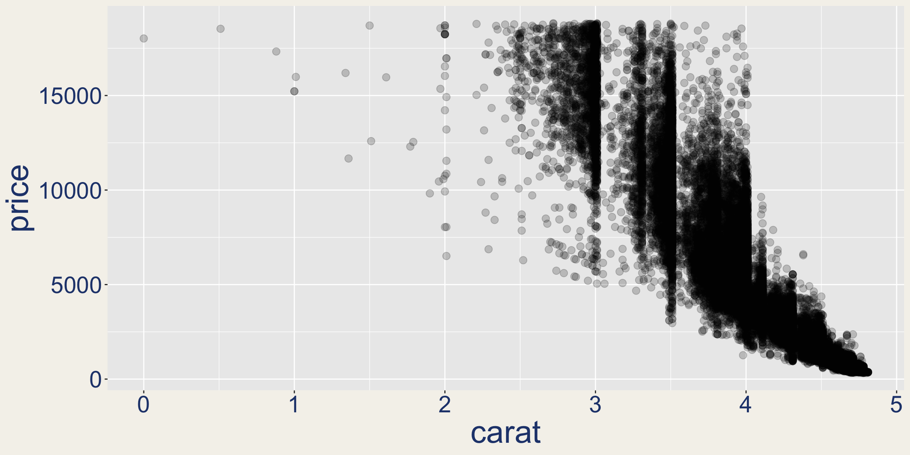
Agents for correct, transparent, and reproducible analysis
Simon Couch and Sara Altman
posit::conf(2026)
https://pos.it/keynote
how is traffic trending for our site?
Analyzing site traffic
⌕
Searching workspaceweb analytics
✓
◫
Querying warehouseanalytics.pageviews
✓
∿
Calculating daily visitslast 90 days
✓
Daily visits are down 64% over the last 90 days.
Daily site visits−64%
could you find the site traffic chart we made a month ago?
Looking for prior analysis
⌕
Searching conversationssite traffic chart
✓
◫
Checking generated filestemporary workspace
✓
I couldn’t find that conversation or any saved analysis files. Do you want me to recreate that chart for the last 90 days?
yeah
Analyzing site traffic
⌕
Searching workspaceweb analytics
✓
◫
Querying warehouseanalytics.sessions
✓
∿
Calculating daily visitslast 90 days
✓
Daily visits increased 22% over the last 90 days.
Daily site visits+22%
In the battle between convenience and correctness, convenience is winning.
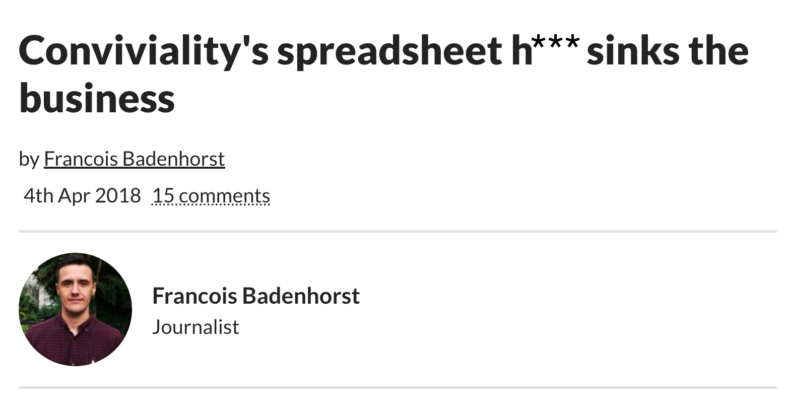
https://www.accountingweb.co.uk/business/management-accounting/convivialitys-spreadsheet-hell-sinks-the-business
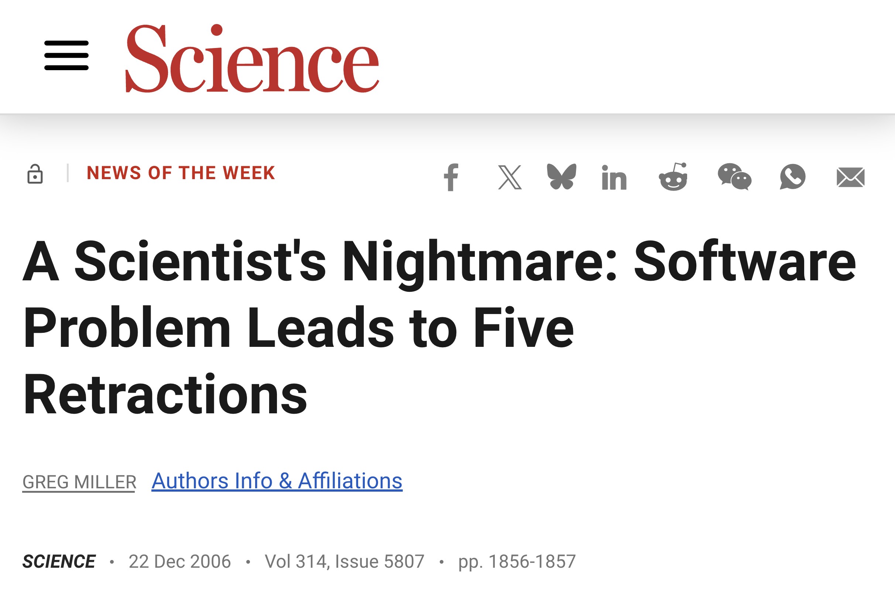
https://www.science.org/doi/10.1126/science.314.5807.1856
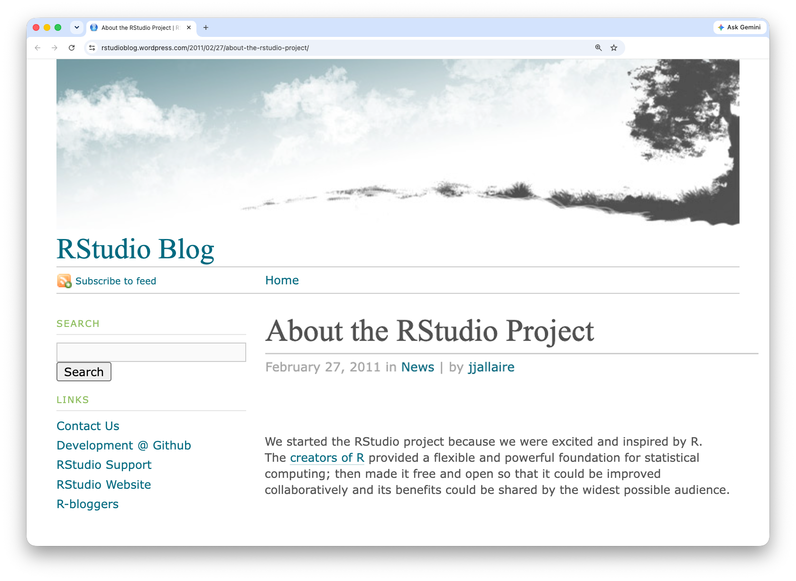
rstudioblog.wordpress.com/2011/02/27/about-the-rstudio-project/
Our goal is to develop a powerful tool that supports trustworthy, high quality analysis.
At the same time, we want RStudio to be as straightforward and intuitive as possible.
https://rstudioblog.wordpress.com/2011/02/28/rstudio-new-open-source-ide-for-r/
Correct and convenient
August 2025
posit.co/blog/databot-is-not-a-flotation-device
Getty Images. Thank you Margaret Biffar and Isabella Velásquez!
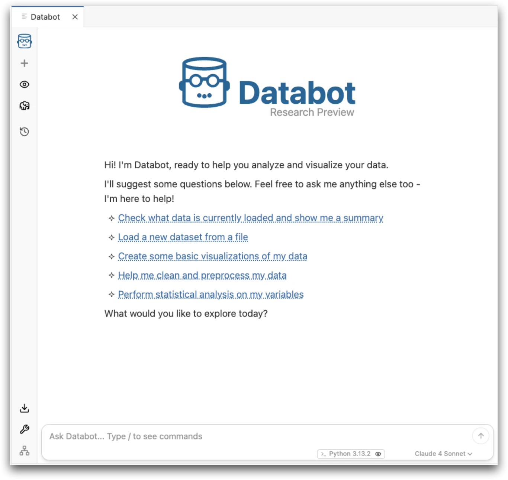
In my 30-year career writing software professionally, Databot is both the most exciting software I’ve worked on, and also the
most dangerous.
Why are we doing this?!
The models got better
Can models interpret plots that contradict their expectations?
November 2025
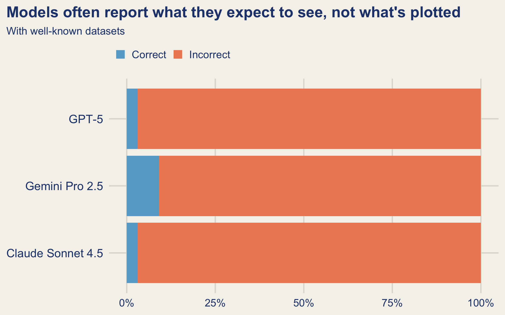
posit-dev.github.io/bluffbench
September 2026
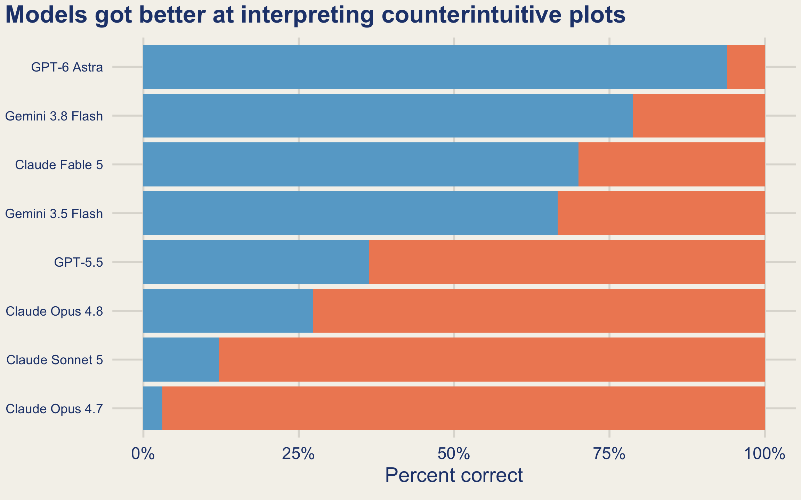
posit-dev.github.io/bluffbench
Correct analysis still takes more than a good model.
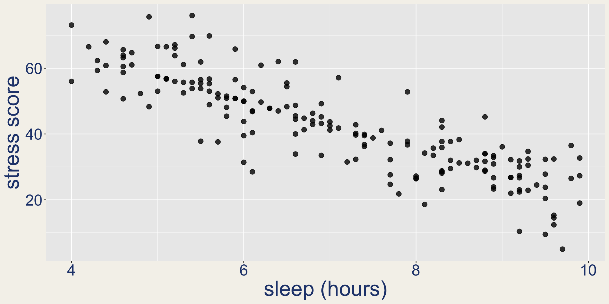
github.com/posit-dev/bluffbench2
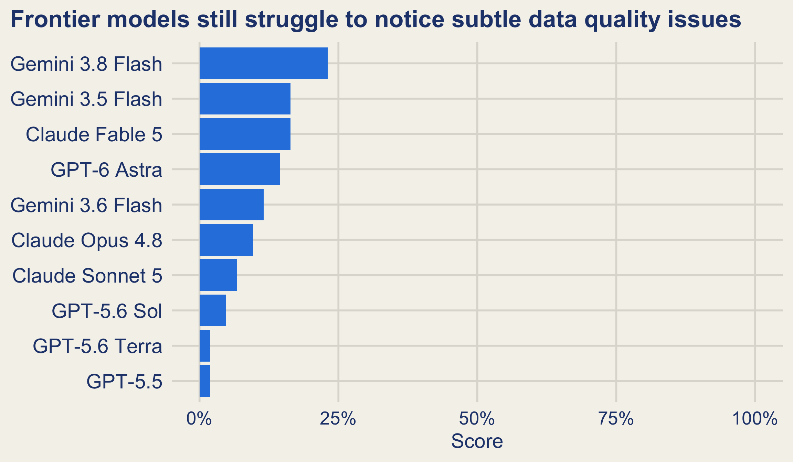
github.com/posit-dev/bluffbench2
Data analysis depends on context that is not in the data.
New ways to understand data.
The right tools let us see below the surface.
Photo: Lars von Ritter Zahony / Ocean Image Bank
AI is a continuation of our work to find new ways to explore data.
How do we make AI-involved analysis correct?
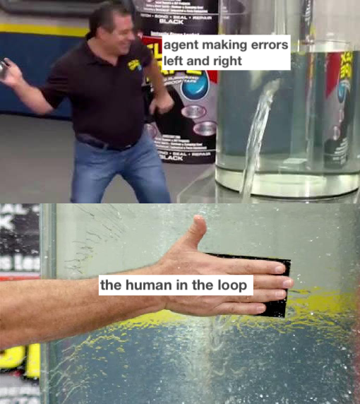
*the slap a human on it approach
Agent
Human
does stuff
verifies, approves, etc.
“Databot, and LLMs in general, aren’t at a point where you can abdicate responsibility or suspend skepticism when working with data. … These skills help you catch errors, interpret results in context, and avoid being misled by confident but incorrect claims.”
posit.co/blog/databot-is-not-a-flotation-device
Adding a human does not guarantee a better result.
- Human-AI combination often underperforms one or the other.
- Approval fatigue.
- Trust, timing, cognitive load, social cues, and information design all shape decisions.
Vaccaro et al. (2024); Parasuraman and Manzey (2010); Anthropic (2026)
People are not fixed safety components.
How do we design the entire system to produce correct work?
Build trust and correctness into the agent itself
Consider how the agent will interact with the user and support their expertise
Help the agent be correct
Make it less bad when the agent is wrong
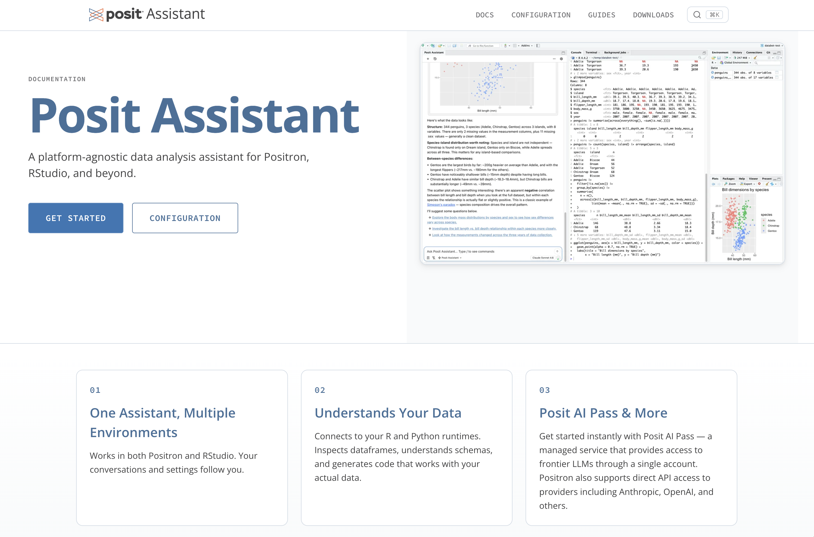
assistant.posit.co
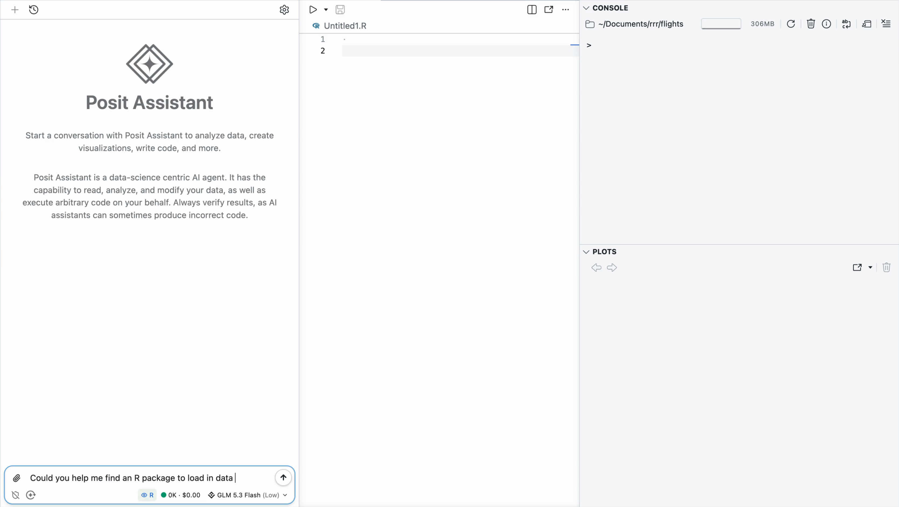
Help the agent be correct by encouraging sound statistics and reproducibility practices
Make it less bad when the agent is wrong by making good use of your expertise and sharing an R/Python environment
But what if the user is not a data scientist?
how is traffic trending for our site?
Daily visits are down 64% over the last 90 days.
Daily site visits−64%
Trusted code
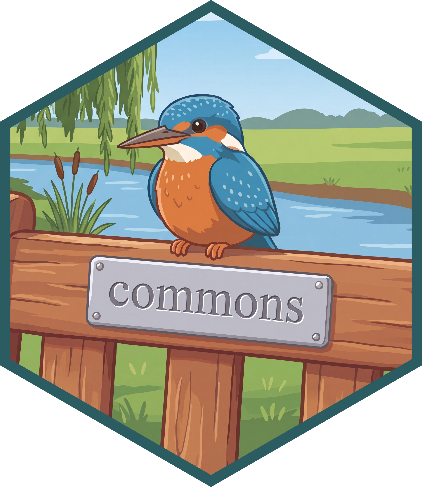
https://pos.it/commons
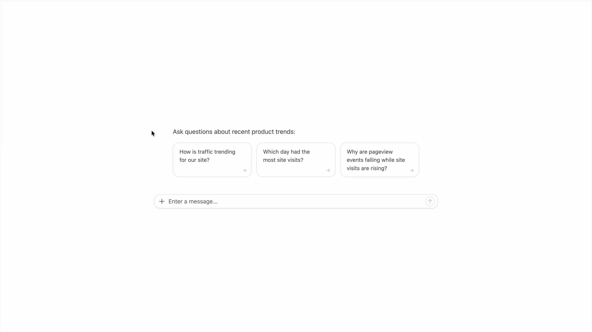
Search trusted calculations
Find one↓
Don’t find one↓
Run trusted calculation
↓
Search context
↓
Write SQL/R/Python
Cite↓
Don’t cite↓
Build
You construct the agent by hooking it up to trusted code.
Deploy
Your colleagues use the agent deployed on Connect.
Improve
You review the agent’s behavior, adding trusted code to cover common use cases.
Help the agent be correct with trusted calculations and context
Make it less bad when the agent is wrong by signaling trust and introducing feedback loops
Not just BI
| commons creator | commons user | Example question |
|---|---|---|
| Biostatistician | MD | “Compare treatment groups.” |
| UX researcher | Product manager | “Summarize experiment results and explain which segments changed.” |
| Policy analyst | Program lead | “Simulate the budget impact of this policy change.” |
Clinical trials agent
https://pos.it/clinical-trials-agent
Looking forward
Canvas
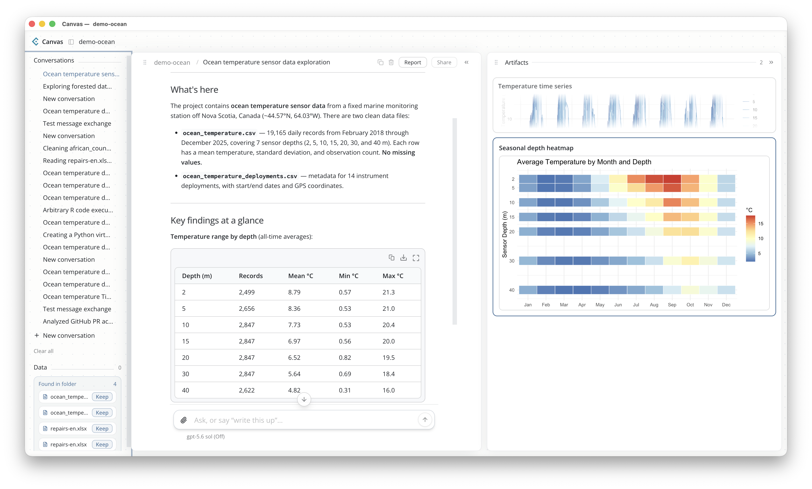
Learn more at Joe Cheng’s talk: Lanier Ballroom A&F, Tuesday at 3:20